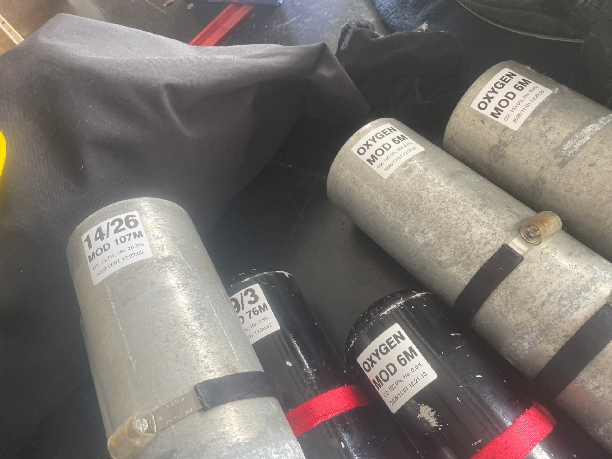
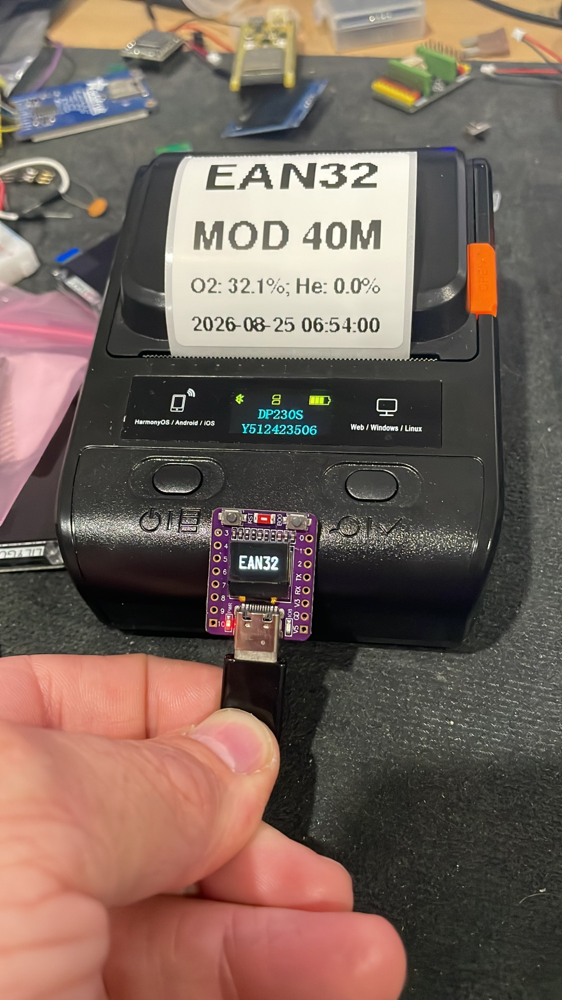
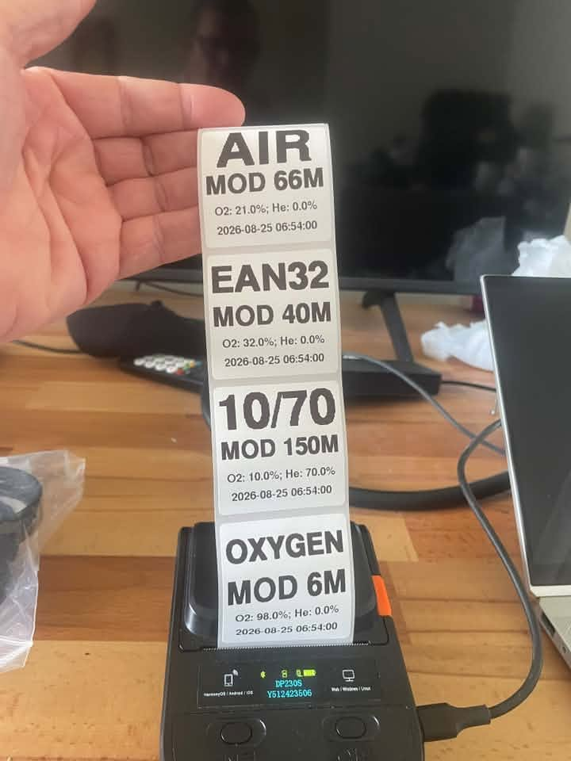
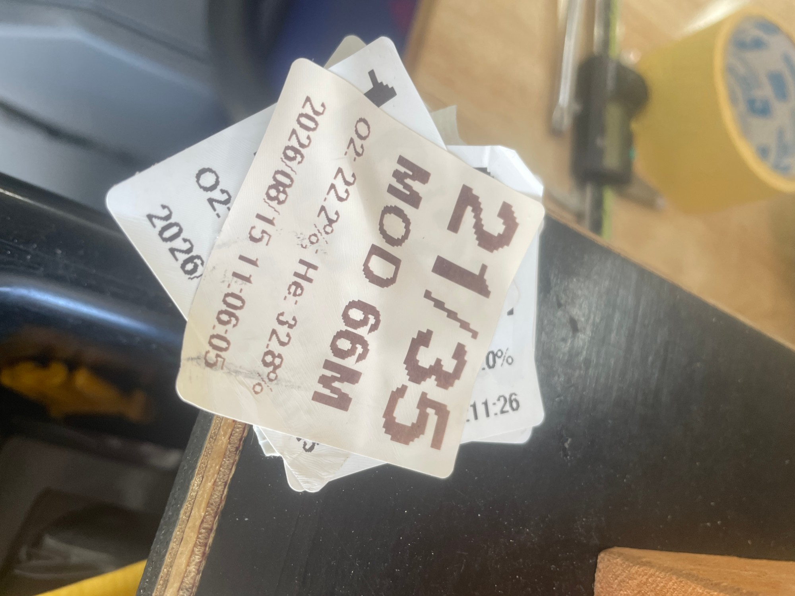
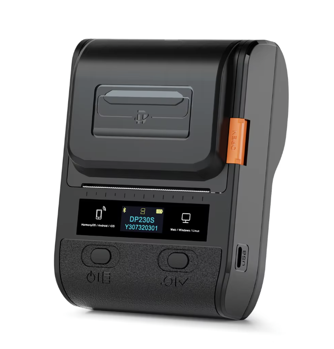
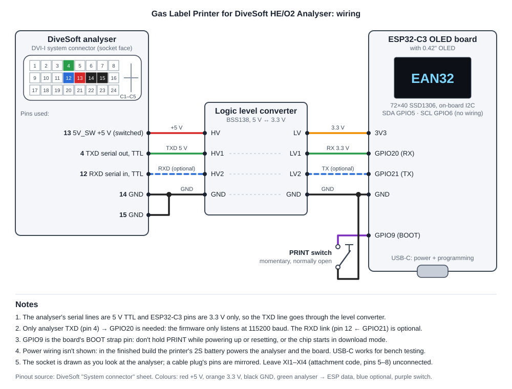

Gas Label Printer for DiveSoft HE/O2 Analyser
ESP32-C3 firmware that reads your DiveSoft helium/oxygen analyser over serial and prints a cylinder label on a Bluetooth thermal printer with one button press.
View the code on GitHub2026-08-25 06:54:00
What it does
Reads the analyser
Parses each line from the analyser's UART output (115200 baud) and rejects noise and partial lines.
Names the mix
Snaps to standard gases: Oxygen, Air, EAN32 to EAN80, 10/70, 15/55, 18/45, 21/35 and 10/50. Anything else prints as measured O2/He.
Works out MOD
Maximum operating depth at ppO2 1.6, never deeper than the measured O2 allows.
Prints a label
A 50 × 50 mm label: gas name, MOD, measured O2/He, and the analyser's date and time.
Shows status
A small OLED shows the gas or a status: PAIR, NO SIG, WAIT, PRNT or ERR.
No stale labels
If no valid reading arrives for 5 seconds the reading is cleared, so an old gas can't be printed.
Photos







Printer and labels

| Spec | Detonger DP230S, as used here |
|---|---|
| Type | Portable direct-thermal label printer (no ink or ribbon) |
| Print width | 384 dots, 48 mm (8 dots/mm, 203 dpi) |
| Connection to this project | Bluetooth Low Energy; found by its Bluetooth name (DP230S-<serial>) |
| Commands | ESC/POS raster bitmap (GS v 0), with GS FF to feed to the next label gap |
| Other ports | USB-C |
| Display | Small OLED: model, serial, Bluetooth and battery status |
| Labels | 50 × 50 mm direct-thermal gap labels |
| Label layout | Gas name and MOD in large bold text, then measured O2/He and the analyser's date and time |
Hardware
| Part | Connection |
|---|---|
| ESP32-C3 OLED board with 0.42" OLED (72×40 SSD1306) | OLED on I2C: SDA GPIO5, SCL GPIO6 |
| Print button | GPIO9 to GND (internal pull-up) |
| Analyser serial | Analyser TX to GPIO20 (RX); GPIO21 is TX |
| Logic level converter | BSS138, 5 V ↔ 3.3 V, between analyser TXD and GPIO20 |
| Detonger DP230S Bluetooth thermal label printer | Connects over BLE by its Bluetooth name; 384-dot (48 mm) print width |
| Labels | 50 × 50 mm thermal labels |
Wiring
The analyser's DVI-I system connector supplies serial data on pin 4 (TXD, 5 V TTL), switched 5 V on pin 13 and ground on pins 14/15.

Build and flash
The project uses PlatformIO. Set your printer's Bluetooth name in src/main.cpp, then:
pio run -t upload pio device monitor
Set DEBUG_MODE = true to cycle through the standard gases without an analyser connected.
A hobby project, not affiliated with DiveSoft. Always analyse your own gas and check the label before diving.